library(tidyverse)
library(lubridate)
library(ggplot2)
library(ggalluvial)
library(dplyr)Choosing the Right Chart and Building Visualizations in R
Class date: Sep 23, 2026
How Visual Choices Can Change the Story
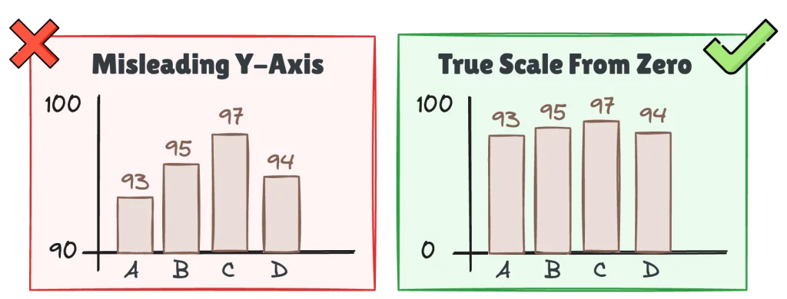
Source: https://www.clicdata.com/blog/a-chart-chooser-for-bi-teams-stop-guessing-start-deciding/
The wrong chart doesn’t just look bad, it changes what people believe the data says.
Today’s goal
Last week, we focused on making the data analysis-ready. Today, we use the cleaned collision data to answer a different question:
Given a question and variable types, which chart should we choose, and how should we build it in R?
Load the cleaned data
We will continue with the dataset cleaned in the previous class.
df_clean <- read.csv("data/nyc_collisions_2025_q1_clean.csv", header = T)
names(df_clean) [1] "collision_id" "crash_date" "crash_time"
[4] "borough" "zip_code" "latitude"
[7] "longitude" "on_street_name" "injured"
[10] "killed" "contributing_factor" "vehicle_type"
[13] "crash_time_parsed" "crash_hour" "crash_weekday"
[16] "vehicle_group" "borough_display" "severe_collision"
[19] "time_of_day" dplyr::glimpse(df_clean)Rows: 2,269,187
Columns: 19
$ collision_id <int> 4455765, 4513547, 4675373, 4541903, 4566131, 46237…
$ crash_date <chr> "2021-09-11", "2022-03-26", "2023-11-01", "2022-06…
$ crash_time <chr> "2:39", "11:45", "1:29", "6:55", "13:21", "13:30",…
$ borough <chr> "", "", "BROOKLYN", "", "", "", "", "", "", "BROOK…
$ zip_code <int> NA, NA, 11230, NA, NA, NA, NA, NA, NA, 11208, 1123…
$ latitude <dbl> NA, NA, 40.62179, NA, NA, NA, NA, NA, NA, 40.66720…
$ longitude <dbl> NA, NA, -73.97002, NA, NA, NA, NA, NA, NA, -73.866…
$ on_street_name <chr> "WHITESTONE EXPRESSWAY", "QUEENSBORO BRIDGE UPPER"…
$ injured <int> 2, 1, 1, 0, 0, 0, 0, 0, 0, 0, 0, 0, 0, 2, 0, 0, 0,…
$ killed <int> 0, 0, 0, 0, 0, 0, 0, 0, 0, 0, 0, 0, 0, 0, 0, 0, 0,…
$ contributing_factor <chr> "Aggressive Driving/Road Rage", "Pavement Slippery…
$ vehicle_type <chr> "Sedan", "Sedan", "Moped", "Sedan", "Station Wagon…
$ crash_time_parsed <chr> "2H 39M 0S", "11H 45M 0S", "1H 29M 0S", "6H 55M 0S…
$ crash_hour <int> 2, 11, 1, 6, 13, 13, 7, 8, 22, 9, 8, 12, 17, 8, 21…
$ crash_weekday <chr> "Saturday", "Saturday", "Wednesday", "Wednesday", …
$ vehicle_group <chr> "Sedan", "Sedan", "Other", "Sedan", "SUV / Station…
$ borough_display <chr> "", "", "BROOKLYN", "", "", "", "", "", "", "BROOK…
$ severe_collision <lgl> TRUE, TRUE, TRUE, FALSE, FALSE, FALSE, FALSE, FALS…
$ time_of_day <chr> "Night", "Morning", "Night", "Morning", "Afternoon…Let’s restore useful variable types like this:
df <- df_clean %>%
mutate(crash_date = ymd(crash_date),
crash_weekday = factor(crash_weekday,
levels = c("Monday", "Tuesday", "Wednesday",
"Thursday", "Friday", "Saturday",
"Sunday")),
time_of_day = factor(time_of_day,
levels = c("Morning", "Afternoon",
"Evening", "Night")))How ggplot2 builds a graph
Before choosing among many chart types, learn the basic logic of ggplot2. A graph is built layer by layer.
For this first example, we ask a simple question:
How many collisions occurred in each borough?
We will build the same graph one step at a time.
Step 1. Start with the data
ggplot(df)
Step 2. Map a variable to an aesthetic
ggplot(df, aes(x = borough))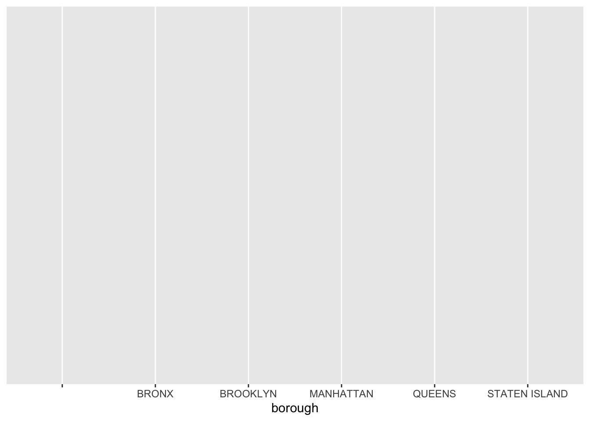
Step 3. Add a geometry
ggplot(df, aes(x = borough)) +
geom_bar()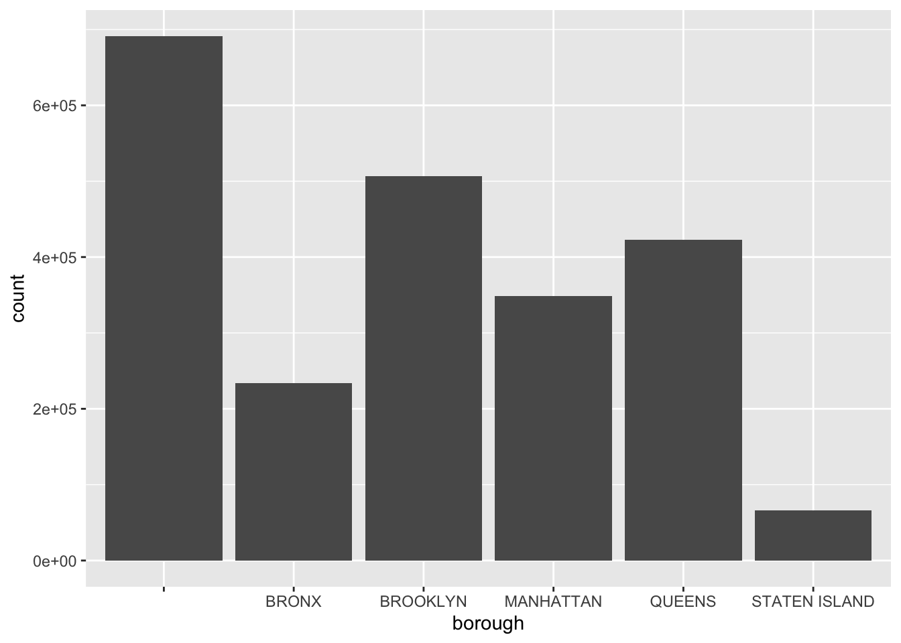
Step 4. Change the appearance
ggplot(df, aes(x = borough)) +
geom_bar(fill = "steelblue")
ggplot(df, aes(x = borough)) +
geom_bar(fill = "steelblue", colour = "black")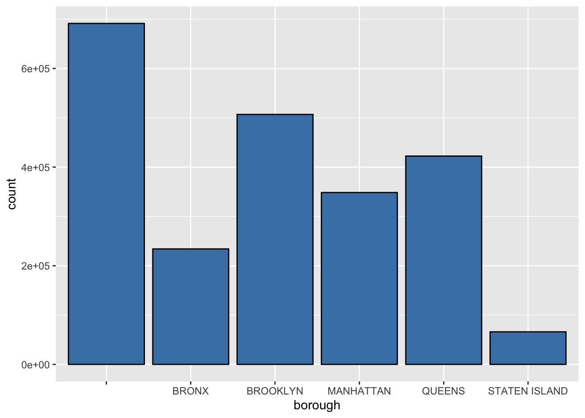
Step 5. Add labels
ggplot(df, aes(x = borough)) +
geom_bar(fill = "steelblue", colour = "black") +
labs(title = "Distribution of Motor Vehicle Collisions by Borough",
x = "Borough", y = "Frequency")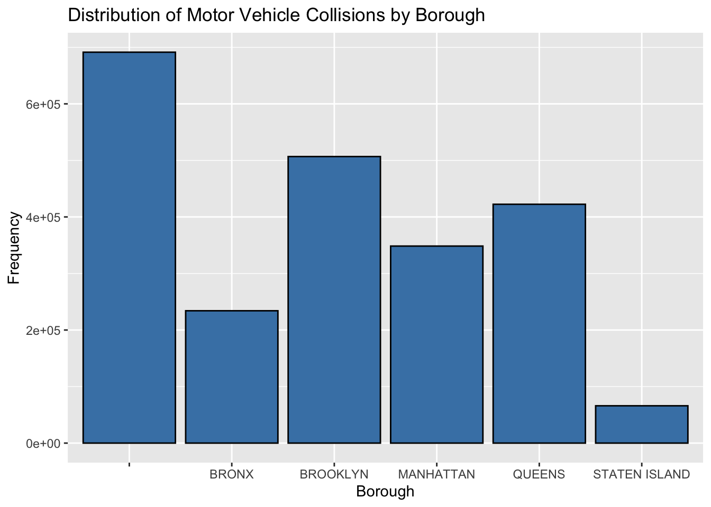
ggplot(df, aes(x = borough)) +
geom_bar(fill = "steelblue", colour = "black") +
labs(title = "Distribution of Motor Vehicle Collisions by Borough",
subtitle = "NYC Motor Vehicle Collisions in the cleaned dataset",
x = "Borough", y = "Frequency")Step 6. Apply a theme
ggplot(df, aes(x = borough)) +
geom_bar(fill = "steelblue", colour = "black") +
labs(title = "Distribution of Motor Vehicle Collisions by Borough",
subtitle = "NYC Motor Vehicle Collisions in the cleaned dataset",
x = "Borough", y = "Frequency") +
theme_classic()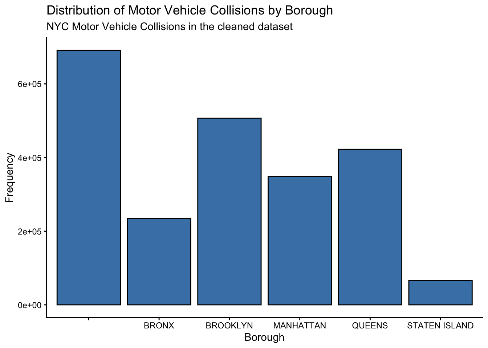
Step 7. Clean the Plotting Data
df.plot <- df %>%
filter(!is.na(borough), borough != "")
ggplot(df.plot, aes(x = borough)) +
geom_bar(fill = "steelblue", colour = "black") +
labs(title = "Distribution of Motor Vehicle Collisions by Borough",
subtitle = "NYC Motor Vehicle Collisions in the cleaned dataset",
x = "Borough", y = "Frequency") +
theme_classic()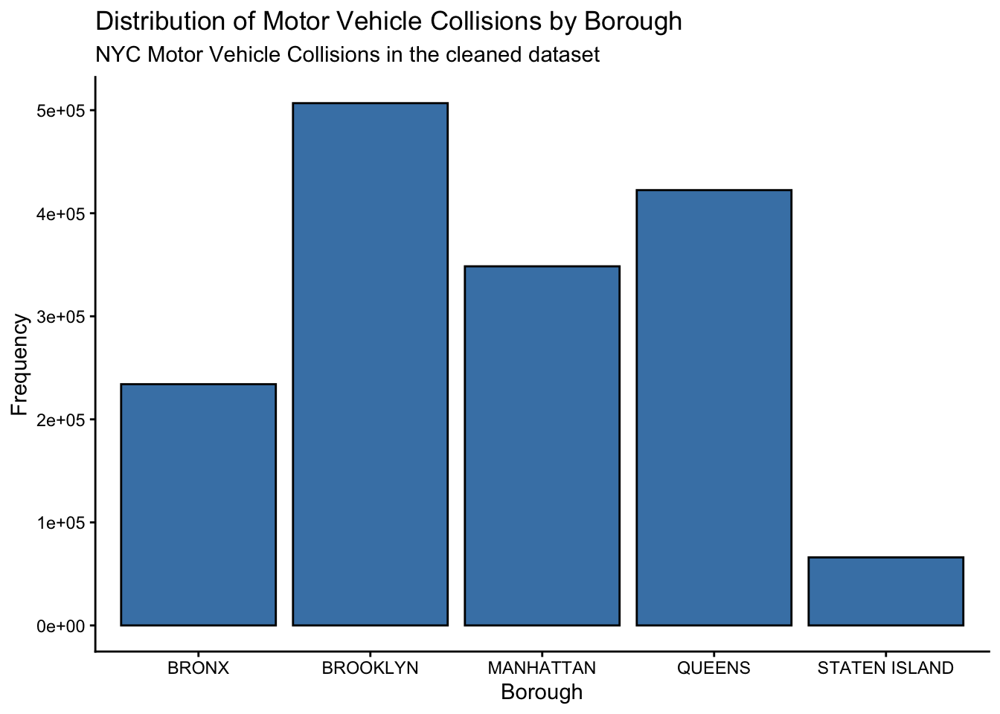
df %>%
filter(!is.na(borough), borough != "") %>%
ggplot(aes(x = borough)) +
geom_bar(fill = "steelblue", colour = "black") +
labs(title = "Distribution of Motor Vehicle Collisions by Borough",
subtitle = "NYC Motor Vehicle Collisions in the cleaned dataset",
x = "Borough", y = "Frequency") +
theme_classic()
ggplot(df %>% filter(!is.na(borough), borough != ""), aes(x = borough)) +
geom_bar(fill = "steelblue", colour = "black") +
labs(title = "Distribution of Motor Vehicle Collisions by Borough",
subtitle = "NYC Motor Vehicle Collisions in the cleaned dataset",
x = "Borough", y = "Frequency") +
theme_classic()
The basic structure
ggplot(data, aes(x = ..., y = ...)) +
geom_...() +
labs(...) +
theme_...()| Component | What does it do? | Example |
|---|---|---|
ggplot() |
Selects the data | ggplot(collisions_clean) |
aes() |
Maps variables to visual properties | aes(x = borough) |
geom_*() |
Determines what is drawn | geom_bar() |
labs() |
Adds titles and labels | labs(title = "...") |
theme_*() |
Controls overall appearance | theme_classic() |
Cf. Mapping vs. setting
This distinction is one of the most important ideas in ggplot2.
- Setting: every bar gets the same color
ggplot(df, aes(x = borough)) +
geom_bar(fill = "steelblue")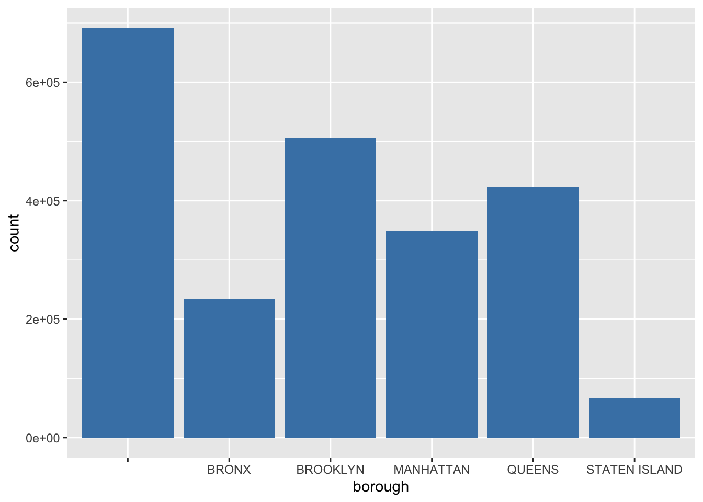
fill = "steelblue" is outside aes(), so the color is fixed.
- Mapping: color is determined by a variable
ggplot(df, aes(x = borough, fill = borough)) +
geom_bar()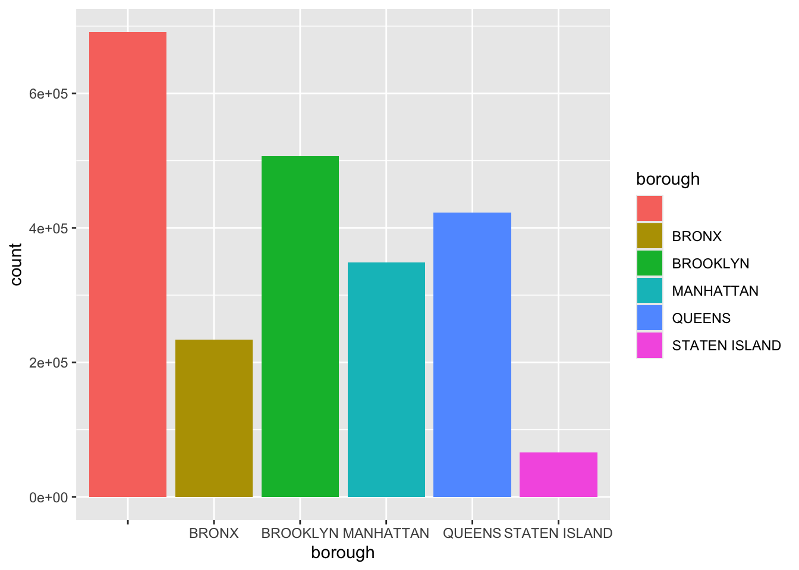
ggplot(df, aes(x = borough, fill = borough)) +
geom_bar() +
scale_fill_brewer(palette = "Set2") +
guides("none")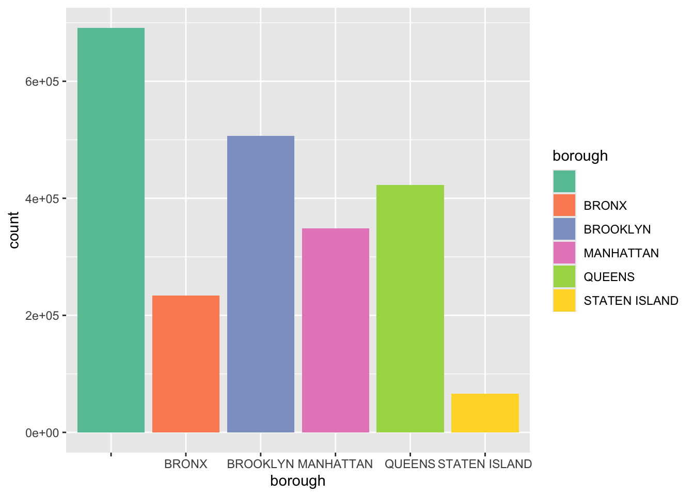
# scale_fill_brewer(palette = "Set1")
# scale_fill_brewer(palette = "Set2")
# scale_fill_brewer(palette = "Pastel1")
# scale_fill_brewer(palette = "Dark2")fill = borough is inside aes(), so color is driven by the data.
Inside
aes()= mapped to data
Outsideaes()= fixed setting
Choose the chart from the question
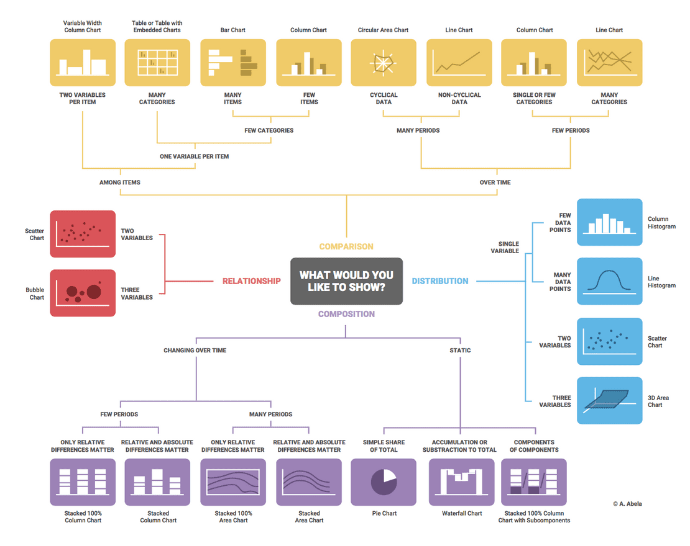
Source: https://biuwer.com/en/blog/how-to-choose-the-right-chart-for-your-data/
| Question Type | Example Question | Variable Types | Useful Chart |
|---|---|---|---|
| Comparison | How many collisions occurred in each borough? | One categorical variable | Bar chart |
| Distribution | How are injury counts distributed? | One numeric variable | Histogram |
| Group Comparison | Do injury counts differ by time of day? | Categorical + numeric | Box plot |
| Trend | How did collisions change over time? | Time + numeric/count | Line chart |
| Relationship | Is daily collision volume related to the number of injured persons? | Numeric + numeric | Scatterplot |
| Two-Way Pattern | What patterns appear across borough and time of day? | Categorical + categorical | Heatmap |
| Flow | How do collisions flow across borough, time of day, and injury severity? | Multiple categorical variables | Alluvial plot |
One categorical variable: bar chart
Question
How many collisions occurred in each borough?
First, inspect the counts.
borough_counts <- df %>%
filter(!is.na(borough), borough != "") %>%
count(borough, sort = TRUE)
borough_counts borough n
1 BROOKLYN 506806
2 QUEENS 422409
3 MANHATTAN 348485
4 BRONX 234088
5 STATEN ISLAND 66024Step 1. Start with the minimum
ggplot(borough_counts, aes(x = borough, y = n)) +
geom_col()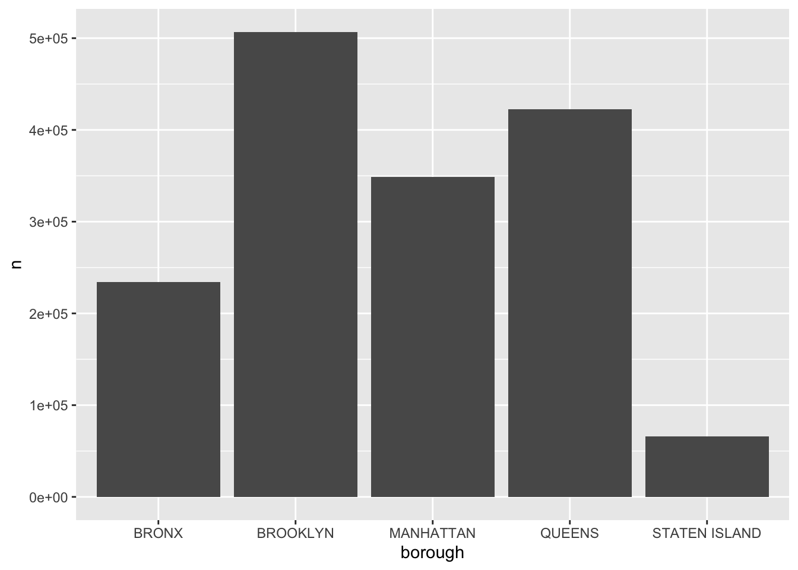
Step 2. Add meaningful labels
ggplot(borough_counts, aes(x = borough, y = n)) +
geom_col() +
labs(x = NULL,
y = "Number of collisions",
title = "Motor vehicle collisions by borough")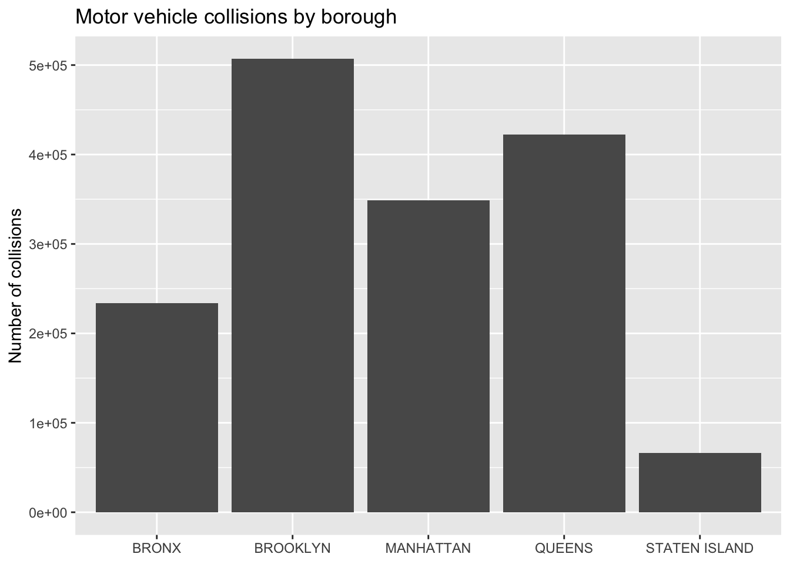
Step 3. Order the categories
ggplot(borough_counts,
aes(x = reorder(borough, n), y = n)) +
geom_col() +
coord_flip() +
labs(x = NULL,y = "Number of collisions",
title = "Motor vehicle collisions by borough") +
theme_minimal()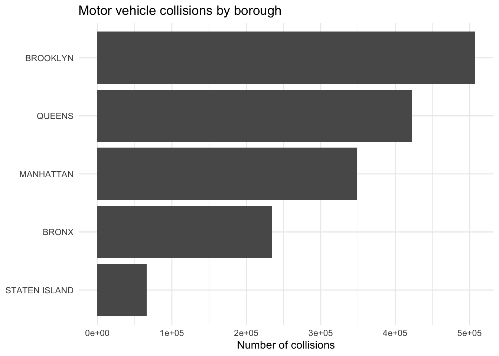
One numeric variable: histogram
Question
How are injury counts distributed across collisions?
First, inspect the variable.
library(psych)
describe(df$injured) vars n mean sd median trimmed mad min max range skew kurtosis se
X1 1 2269169 0.33 0.72 0 0.18 0 0 43 43 4.04 45.66 0Now visualize the distribution.
ggplot(df, aes(x = injured)) +
geom_histogram(binwidth = 1, boundary = -0.5) +
labs(x = "Number of persons injured",
y = "Number of collisions",
title = "Distribution of injuries per collision") +
theme_minimal()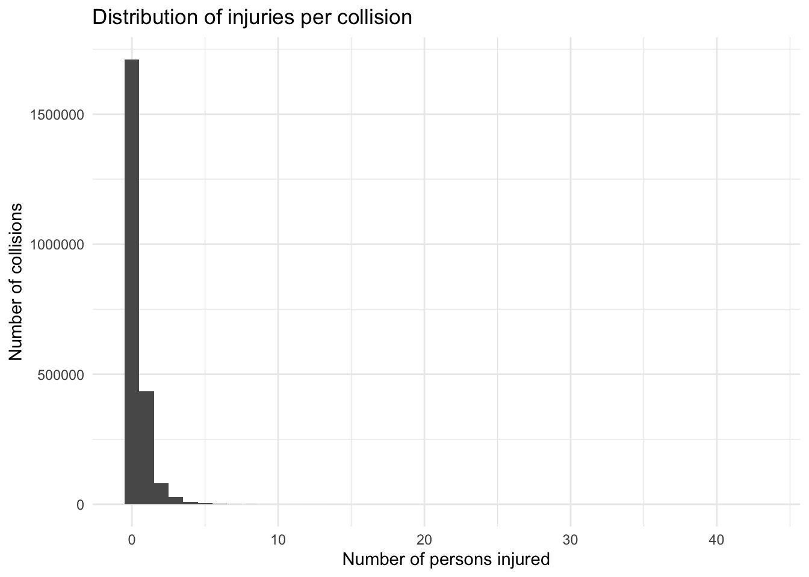
# df %>% count(injured, sort = TRUE)problem: the distribution is highly concentrated at zero
For exploratory purposes, we may want to inspect collisions involving at least one injury separately.
df %>%
filter(injured > 1) %>%
ggplot(aes(x = injured)) +
geom_histogram(binwidth = 1, boundary = 0.5) +
labs(x = "Number of persons injured",
y = "Number of collisions",
title = "Injury counts among collisions with at least one injury") +
theme_minimal()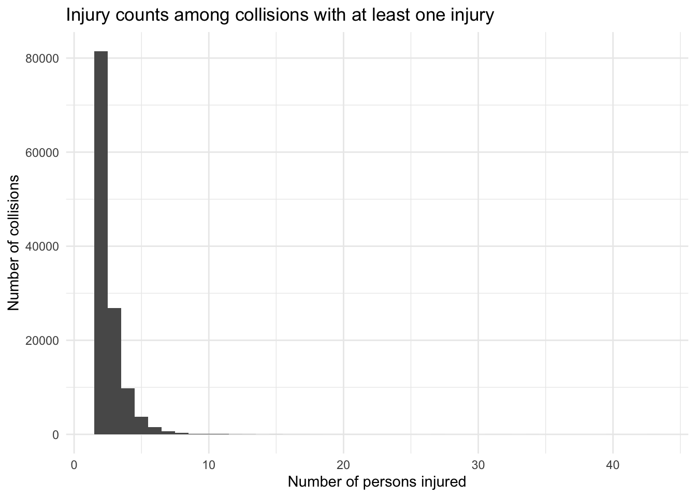
ggplot(df, aes(x = crash_hour)) +
geom_histogram(binwidth = 1, boundary = .5,
fill = "grey", colour = "black") +
labs(title = "Distribution of Motor Vehicle Collisions by Hour",
x = "Hour of Day", y = "Number of Collisions") +
theme_light()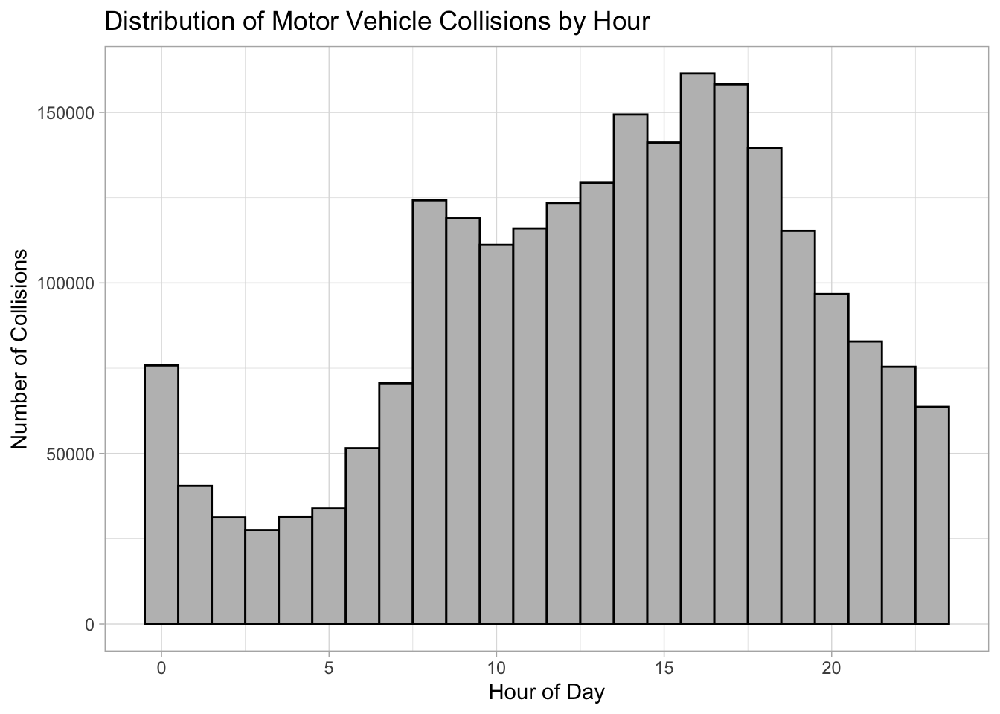
Categorical + numeric: box plot
Question
Do injury counts differ across times of day?
ggplot(df, aes(x = time_of_day, y = injured)) +
geom_boxplot() +
labs(x = "",
y = "Number of persons injured",
title = "Injury counts by time of day") +
theme_minimal()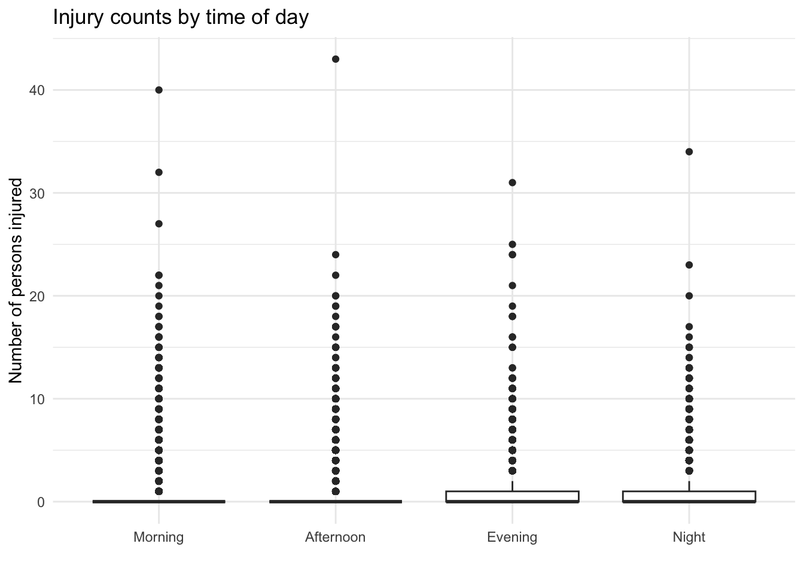
The plot may be difficult to read because most values are zero. This is itself an important feature of the data.
We can complement the plot with group-wise summaries.
df %>%
filter(!is.na(time_of_day)) %>%
group_by(time_of_day) %>%
summarise(
n = n(),
mean_injured = mean(injured, na.rm = TRUE),
median_injured = median(injured, na.rm = TRUE),
severe_rate = mean(severe_collision, na.rm = TRUE)
)# A tibble: 4 × 5
time_of_day n mean_injured median_injured severe_rate
<fct> <int> <dbl> <dbl> <dbl>
1 Morning 626327 0.292 0 0.223
2 Afternoon 704744 0.307 0 0.231
3 Evening 509741 0.357 0 0.269
4 Night 428375 0.409 0 0.285daily_time_counts <- df %>%
filter(!is.na(crash_date), !is.na(time_of_day)) %>%
count(crash_date, time_of_day, name = "collisions")
# daily_time_counts
ggplot(daily_time_counts,
aes(x = time_of_day, y = collisions,
fill = time_of_day)) +
geom_boxplot(width = 0.65, alpha = 0.75) +
guides(fill = "none") +
labs(x = "", y = "Number of collisions per day",
title = "Daily Collision Counts by Time of Day") +
theme_minimal()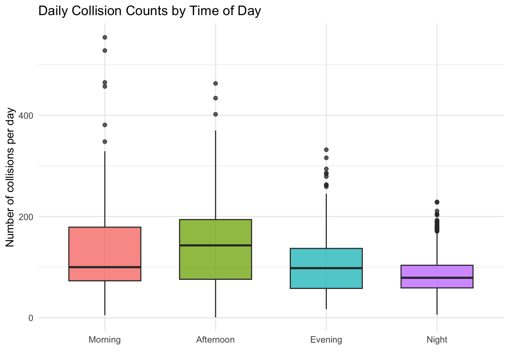
Time: line chart
Question
How did the number of collisions change from day to day?
First aggregate the collision-level data into daily counts.
daily_collisions <- df %>%
filter(!is.na(crash_date)) %>%
count(crash_date)
head(daily_collisions) crash_date n
1 2012-07-01 538
2 2012-07-02 564
3 2012-07-03 664
4 2012-07-04 432
5 2012-07-05 591
6 2012-07-06 638Then draw the time series.
ggplot(daily_collisions, aes(x = crash_date, y = n)) +
geom_line() +
labs(x = "", y = "Number of collisions",
title = "Daily motor vehicle collisions") +
theme_minimal()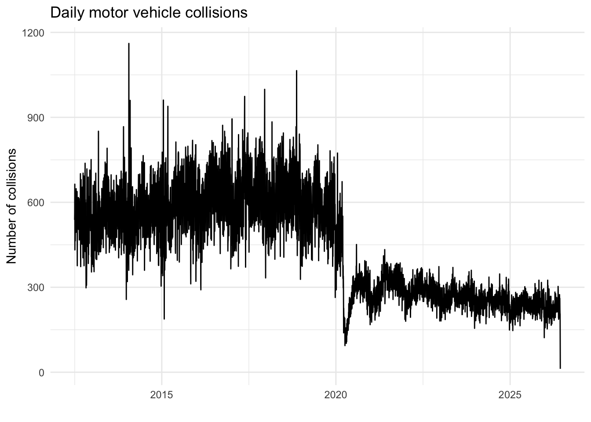
ggplot(daily_collisions, aes(x = crash_date, y = n)) +
geom_line(colour = "grey75",
linewidth = 0.35,alpha = 0.6) +
geom_smooth(method = "lm", se = F,
colour = "steelblue", linewidth = 1.1) +
labs(title = "Daily Motor Vehicle Collisions in NYC",
subtitle = "Daily variation and overall trend",
x = "", y = "Number of collisions") +
theme_classic()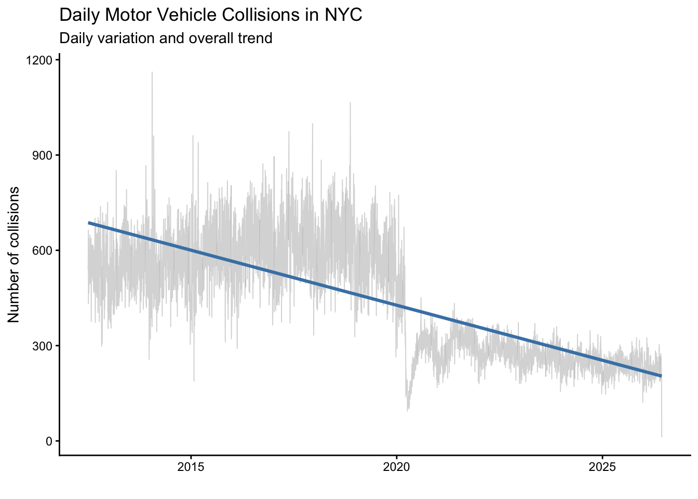
NoteWhy aggregate first?
The raw dataset has one row per collision. A line chart of daily collision counts requires one row per day, so we first transform the data to the level required by the chart.
Numeric + numeric (relationship): scatterplot
Question
How is daily collision volume related to the number of injured persons?
daily_summary <- df %>%
filter(!is.na(crash_date), !is.na(injured)) %>%
group_by(crash_date) %>%
summarise(collisions = n(),
total_injured = sum(injured, na.rm = TRUE),
.groups = "drop") %>%
mutate(weekday = wday(crash_date,
label = TRUE,
abbr = FALSE,
week_start = 1),
day_type = if_else(weekday %in% c("Saturday", "Sunday"),
"Weekend",
"Weekday"))
ggplot(daily_summary, aes(x = collisions,
y = total_injured)) +
geom_point(alpha = 0.5,size = 2.5) +
labs(title = "Daily Collision Volume and Injuries",
subtitle = "Each point represents one day",
x = "Number of Collisions",
y = "Number of Persons Injured") +
theme_minimal()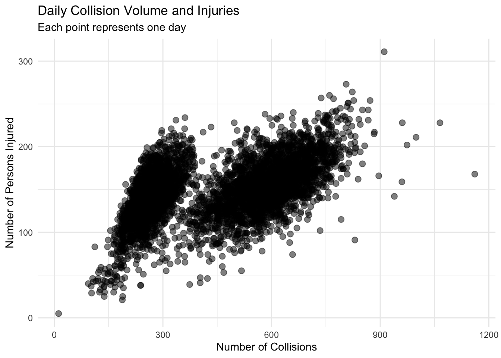
ggplot(daily_summary, aes(x = collisions,
y = total_injured,
colour = day_type)) +
geom_point(alpha = 0.5,size = 2.5) +
labs(title = "Daily Collision Volume and Injuries",
subtitle = "Each point represents one day",
x = "Number of Collisions",
y = "Number of Persons Injured",
colour = "Day Type") +
theme_minimal()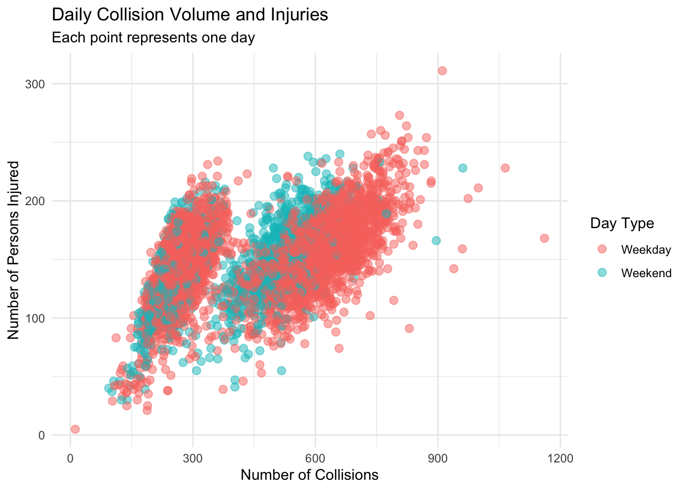
Improving a chart: ask what the viewer needs
A good chart should make the intended comparison easy to see.
When refining a figure, check:
- Is the chart type appropriate for the question?
- Are categories ordered meaningfully?
- Are the axis labels understandable?
- Does the title state what is being shown?
- Are unnecessary elements distracting attention?
- Have we accidentally hidden important cases by filtering?
- Does the chart imply more than the data support?
Example: from default output to communication-ready output
borough_counts %>%
ggplot(aes(x = reorder(borough, n), y = n)) +
geom_col() +
coord_flip() +
labs(x = "", y = "Number of collisions",
title = "Brooklyn recorded the most collisions in the selected period", subtitle = "NYC Motor Vehicle Collisions"
) +
theme_minimal()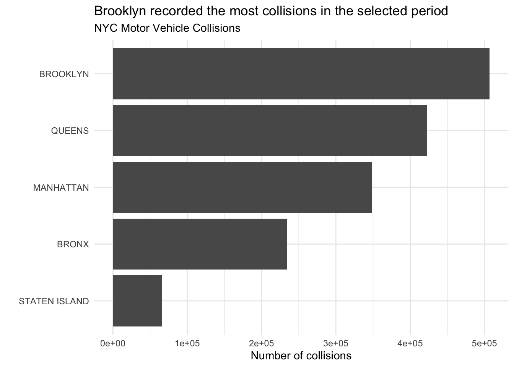
WarningBe careful with claim-like titles
A title such as “Brooklyn is the most dangerous borough” would go beyond what this chart shows. The data show the number of recorded collisions, not overall danger or individual risk.
Cf. Advanced showcase: what else can R visualize?
Alluvial plot: showing flows across categories (sankey plot)
An alluvial plot is useful when the goal is to show how observations are distributed across several categorical variables at the same time.
flow_data <- df %>%
mutate(
collision_outcome = case_when(
killed > 0 ~ "Fatality",
injured > 0 ~ "Injury",
TRUE ~ "No injury"
)
) %>%
filter(
!is.na(borough_display),
borough_display != "Unknown",
!is.na(time_of_day)
) %>%
count(borough_display, time_of_day, collision_outcome)
head(flow_data) borough_display time_of_day collision_outcome n
1 Morning Fatality 292
2 Morning Injury 45755
3 Morning No injury 147451
4 Afternoon Fatality 185
5 Afternoon Injury 49134
6 Afternoon No injury 157320ggplot(
flow_data,
aes(
axis1 = borough_display,
axis2 = time_of_day,
axis3 = collision_outcome,
y = n
)
) +
geom_alluvium(aes(fill = borough_display), alpha = 0.65) +
geom_stratum(width = 0.18, fill = "grey95", colour = "grey40") +
geom_text(
stat = "stratum",
aes(label = after_stat(stratum)),
size = 3
) +
scale_x_discrete(
limits = c("Borough", "Time of day", "Outcome"),
expand = c(.06, .06)
) +
labs(
x = NULL,
y = "Number of collisions",
title = "How collisions flow across place, time, and outcome"
) +
guides(fill = "none") +
theme_minimal()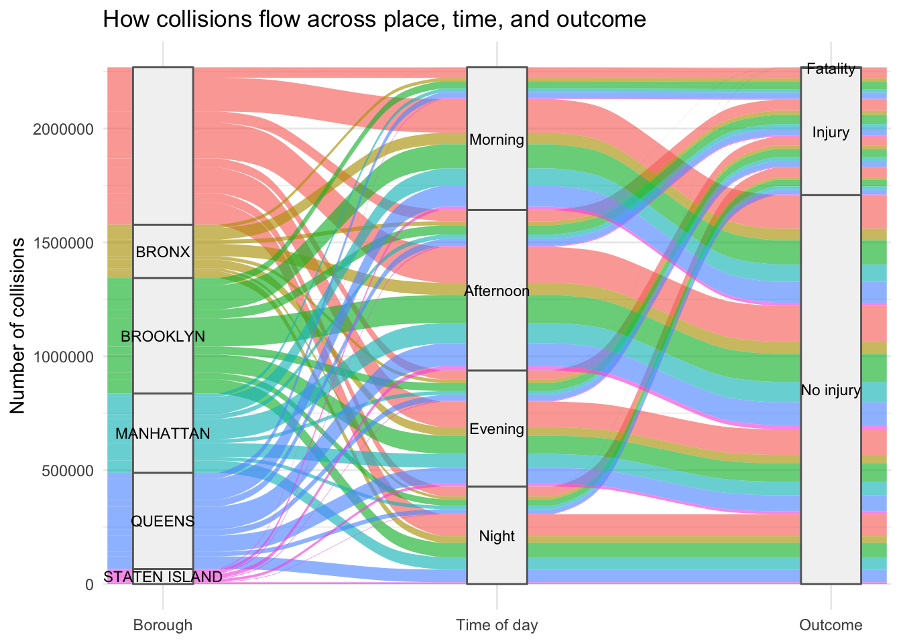
WarningImpressive does not always mean better
Alluvial plots can become difficult to read when there are too many categories. Use them when the flow itself is the message, not simply because the chart looks sophisticated.